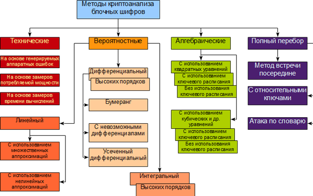
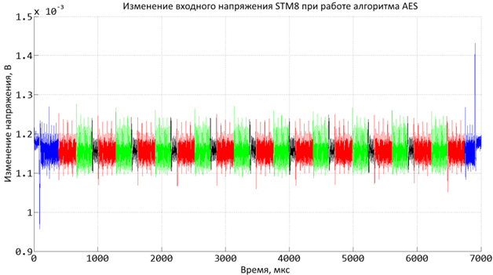
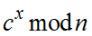

Методы криптоанализа блочных шифров направлены на вычисление ключа алгоритма шифрования с использованием одной из атак, рассмотренных в п. 1.3.2. В каждом методе криптоанализа, кроме переборных методов, вычисление ключа основывается на построении модели блочного шифра. Далее, эта модель используется для вычисления ключа при подстановке в нее реальных данных и выполнении всех вычислений. Классификация методов криптоанализа блочных шифров представлена на рис. 3.31. Метод криптоанализа считается успешным, если он имеет вычислительную сложность меньше, чем полный перебор, даже если взлом все еще невозможно осуществить на практике.

Рис. 3.31. Классификация методов криптоанализа блочных шифров
Существуют четыре основных класса методов криптоанализа блочных шифров, отличающиеся методикой проведения. Одни из них могут быть использованы при реальном взломе шифров, другие используются для подтверждения криптостойкости алгоритмов шифрования.
Первый класс − это технические методы криптоанализа. Дадим краткую характеристику каждого из методов данного класса. Метод криптоанализа на основе генерации аппаратных ошибок основан на анализе поведения устройства, в котором реализован алгоритм шифрования и возможном оказании на него воздействий, не предусмотренных назначением устройства. В качестве непредусмотренных воздействий могут использоваться мощный электромагнитный импульс, воздействие ионизирующим излучением, специально сгенерированные помехи в цепи питания и даже обычное нагревание. Цель воздействия состоит в появлении ошибки в заданном месте алгоритма шифрования. С использованием этого метода можно взломать большинство блочных шифров.
Следующий метод − это замер энергопотребления с высокой точностью при выполнении операции шифрования/расшифрования. В зависимости от потребления энергии при выполнении различных операций блочного шифра, можно предположить какие данные при этом использовались. Так, например, картина энергопотребления при шифровании с помощью алгоритма AES и разделением на отдельные операции, замеренная с периодом 352 нс, представлена на рисунке 3.32 [35]. Синим цветом выделены обращения к памяти, красным − сложение с ключом, зеленым − операции замены и черным − смешивание столбцов. При этом имеется возможность уменьшить этот интервал до 100пс (на 3 порядка) и получить гораздо более детальную картину. На практике для устранения влияния шумов такие замеры необходимо проводить многократно с последующим усреднением. Кроме энергопотребления существует аналогичный способ, основанный на измерении излучения устройства шифрования.
 |
Рис. 3.32. Динамика изменения входного напряжения при работе алгоритма AES |
Завершающим, в классе технических, является метод, заключающийся в высокоточном измерении времени шифрования. В основном этот метод предназначен для криптоанализа асимметричных криптосистем. Он основан на том факте, что шифрования с различными параметрами алгоритма (например, ключами), могут заметно отличаться по времени. С использованием высокоточных замеров времени вычислений возможно уменьшение общего пространства перебора ключей, так как путем анализа времени вычислений можно предположить, в какой части пространства перебора располагается искомый ключ. Рассмотрим пример, пусть выполняется анализ алгоритма RSA путем анализа времени расшифрования. С учетом того, что расшифрование выполняется как  время расшифрования будет тем больше, чем больше x.
Технические методы криптоанализа интересны тем, что многие алгоритмы шифрования являются уязвимыми к этим методам, хотя и существуют шифры, специально спроектированные для защиты от технического криптоанализа. Применение технических методов ограничено условием доступа к устройству шифрования, что на практике встречается крайне редко. Как правило, криптоаналитик перехватывает информацию за сотни километров от места применения шифровальной аппаратуры.
Второй класс − это вероятностные методы, они основаны на выявлении в алгоритме шифрования статистических отклонений от случайного поведения, и использования этих отклонений для проведения атаки на алгоритм. Основным недостатком вероятностных методов является экспоненциальная зависимость сложности атаки и количества данных, требующихся для ее проведения, от числа раундов блочного шифра. Поэтому, такие атаки обычно являются практически недоступными, но играют важную роль в подтверждении криптостойкости новых шифров. Вместе с тем, это действительно универсальные методы, с тем или иным успехом работающие для большинства блочных алгоритмов шифрования. Суть вероятностных методов состоит в построении вероятностной модели алгоритма шифрования таким образом, что с ее помощью можно будет отличить результат шифрования с разными подключами от истинно случайной последовательности, и, таким образом, найти верный подключ. Так как в современных шифрах статистические отклонения проявляются только в больших объемах данных, то для статистических методов анализа обычно требуется очень большое количество данных вида «открытый текст/шифртекст», зашифрованных на одном ключе, что, чаще всего, неосуществимо на практике.
Третий класс − алгебраические методы криптоанализа, основанные на представлении системы в виде некоторой математической задачи, решение которой позволяет взломать алгоритм. Алгебраические методы несмотря на то, что они в настоящее время еще недостаточно развиты, являются одними из самых перспективных в криптоанализе. Теоретически, они позволяют определять секретный ключ с помощью анализа одной или двух пар «открытый текст/шифртекст». Суть этих методов заключается в построении сверхопределенной (имеющей намного больше уравнений, чем переменных) разреженной (имеющих малое число членов в каждом уравнении) системы нелинейных (квадратичных, реже кубических) уравнений, описывающей поведение алгоритма. Решение этой системы дает секретный ключ, используемый при шифровании. С другой стороны, несмотря на перспективность этих методов, за прошедшие 8−10 лет с момента их появления существенных успехов с их использованием достигнуто не было, и пока не существует ни одного примера криптоанализа практического блочного шифра с использованием этих методов.
Четвертый класс − это переборные методы. Стойкость к прямому перебору определяется длиной ключа. Остальные методы в данном классе − это оптимизированные техники поиска ключа.